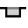

Modifica della geometria
In Bend TecZone è disponibile un potente editor di schizzi 2D per modificare, pulire o fare aggiunte alla geometria. Usare il tasto di scelta rapida S per accedere alla modalità schizzo. L’editor visualizza il pezzo in vista sviluppata.

Nella vista sviluppata, fare clic sull’icona Sketch  o premere il tasto
di scelta rapida S.
o premere il tasto
di scelta rapida S.
Si apre un menu con varie icone per l’elaborazione dell’operazione di sviluppo:

Pannello Schizzo
| Icona | Simbolo | Significato |
|---|---|---|
|
Select |
Selezionare oggetti, linee, voci, ecc. |
|
Line |
Fare lo schizzo di una linea |
|
Connected line |
Fa lo schizzo di un numero qualsiasi di righe |
|
Parallel |
Fa lo schizzo di una parallela a una linea |
|
Normal |
Fa lo schizzo di una tangente a una piega |
|
Bendline |
Fa lo schizzo di una linea normale su una linea |
|
Center-Point Arc |
Fare lo schizzo di una linea di piegatura |
2-Point Arc |
Fa lo schizzo di un arco da un punto centrale, un punto iniziale e un punto finale |
|
|
3-Point Arc |
Fa lo schizzo di un arco circolare attraverso due punti definiti (punto iniziale e finale) |
|
Tangent Arc |
Fa lo schizzo di un arco tangente agli elementi dello schizzo |
|
Rectangle |
Fa lo schizzo di un rettangolo |
|
Center-Point Rectangle |
Fa lo schizzo di un rettangolo dal centro |
|
Circle |
Fa lo schizzo di un cerchio. Selezionare il punto centrale del cerchio e trascinare il cursore per definire il raggio o inserire un valore per il raggio |
|
2-Point Circle |
Fa lo schizzo di un cerchio in base alla circonferenza. Selezionare un punto sulla circonferenza, poi un secondo punto e un terzo. |
|
3-Point Circle |
Fa lo schizzo di un cerchio in base alla circonferenza. Selezionare un punto sulla circonferenza, poi un secondo punto e un terzo. |
|
2-Tangent Circle |
Fa lo schizzo di un cerchio con due tangenti. Inserire il diametro del cerchio, quindi selezionare la prima tangente e poi la seconda. |
|
3-Tangent Circle |
Fa lo schizzo di un cerchio con tre tangenti. Inserire il diametro del cerchio, quindi selezionare la prima tangente, poi la seconda e quindi la terza. |
|
Inscribed Polygon |
Fa lo schizzo di un cerchio con tre tangenti. Inserire il diametro del cerchio, quindi selezionare la prima tangente, poi la seconda e quindi la terza. |
|
Circumscribed Polygon |
Fa lo schizzo di un poligono. Specificare il numero di lati e selezionare un punto centrale e il centro di un bordo laterale |
|
Edge Polygon |
Fa lo schizzo di un poligono. Specificare il numero di lati e definire il punto iniziale e finale di un lato. |
Fillet |
Arrotonda lo spigolo nel vertice di due elementi dello schizzo con un raggio inserito, per cui viene creato un arco tangenziale |
|
|
Chamfer |
Crea uno smusso sullo spigolo dell’intersezione di due elementi dello schizzo |
|
In-Fillet |
Taglia a misura lo spigolo all’intersezione di due elementi dello schizzo con un raggio inserito |
|
Corner Step |
Taglia a misura lo spigolo all’intersezione di due elementi dello schizzo con un rettangolo. Le dimensioni del rettangolo possono essere inserite in anticipo. |
 |
Edge Recess |
Crea un taglio di scarico rettangolare. È necessario inserire la distanza dello spigolo e la profondità del taglio di scarico e quindi selezionare uno spigolo. |
Edge U-Cut |
Crea un taglio di scarico a forma di foro longitudinale. È necessario inserire la distanza dello spigolo, la larghezza del taglio di scarico e la profondità del taglio di scarico e quindi selezionare uno spigolo. |
|
|
Edge V-Cut |
Crea un taglio di scarico triangolare. È necessario inserire la distanza dello spigolo, la larghezza del taglio di scarico e la profondità del taglio di scarico e quindi selezionare uno spigolo. |
|
Keyslot |
Crea un canale vapore in cerchio con i valori inseriti. |
|
Fillet 3-Seg |
Arrotonda tre elementi dello schizzo collegati |
|
Extend |
Selezionare l’elemento dello schizzo da estendere |
Trim |
Seleziona l’elemento dello schizzo che deve essere rifilato |
|
|
Join |
Utilizzato per tagliare a misura e unire diverse polilinee separate in una unica |
|
Offset |
Eseguire l’offset di uno o più elementi dello schizzo, i bordi del modello di cui si è fatto lo schizzo o le facce del modello di una distanza specificata |
|
Move |
Selezionare un elemento dello schizzo con ctrl Selezionare un punto di riferimento e spostare l' elemento dello schizzo |
|
Rotate |
Selezionare un elemento dello schizzo con ctrl Selezionare un punto centrale di rotazione, quindi un punto iniziale e un punto finale per ruotare l’elemento dello schizzo |
|
Scale |
Selezionare un elemento dello schizzo ctrl Selezionare un punto base, quindi un punto di riferimento iniziale un punto di riferimento finale per ridimensionare l’elemento dello schizzo |
Mirror |
Selezionare un elemento dello schizzo con ctrl, poi l’inizio della linea di specchiatura e quindi la fine della linea di specchiatura per riflettere l’elemento dello schizzo |
|
|
Rectangle Array |
Usare ripetizioni lineari per creare più copie di riferimento di uno o più elementi dello schizzo che è possibile posizionare a distanze uguali lungo uno o due percorsi lineari. Fare clic sulla ripetizione lineare e inserire i valori desiderati |
|
Polar Array |
Usare modelli circolari per creare più copie di riferimento di uno o più elementi dello schizzo che è possibile posizionare a distanze uguali lungo un asse. Fare clic sui modelli circolari e inserire i valori desiderati |
|
Union |
Selezionare due o più elementi dello schizzo chiusi per combinare le superfici tra loro |
|
Intersection |
Selezionare due o più elementi dello schizzo chiusi per generare un’area di taglio degli elementi selezionati |
|
Subtraction |
Selezionare due o più elementi dello schizzo chiusi per tagliare a misura la superficie |
|
Copy Notch |
È possibile eseguire più copie di una tacca lungo un bordo utilizzando questo utensile. Innanzitutto inserire la spaziatura tra le copie e il numero di copie della tacca che si desidera fare. Quindi, selezionare la tacca facendo clic sui segmenti a due righe che sono adiacenti alla tacca |
|
Delete Notch |
È possibile eliminare una tacca in uno spigolo o lungo un segmento della linea utilizzando questo utensile. fare clic sui segmenti a due linee adiacenti alla tacca; la tacca viene rimossa |
|
Mirror Notch |
È possibile eseguire il mirroring di una tacca in uno spigolo o lungo un segmento della linea utilizzando questo utensile. Fare clic sui segmenti a due linee adiacenti alla tacca; la tacca è speculare |
|
Spline |
Per iniziare una nuova spline, fare clic sul punto iniziale. Man mano che si fa clic sui punti successivi verrà creata la spline. Se si desidera chiudere la spline, premere il tasto ALT E quindi cliccare |
|
Profile |
Digitare la lunghezza della base, l’altezza del bordo, lo spessore, l’angolo della flangia, il raggio interno. Premere Invio per creare un profilo |
|
Text |
Utilizzato per disegnare il testo che verrà contrassegnato sul pezzo dalla macchina laser. Quando si fa clic su questo pulsante dell’utensile, la barra di input visualizza le caselle di inserimento per il testo, la dimensione, e l’angolo di rotazione |
|
Truetype Text |
Utilizzato per prendere le forme dei caratteri in qualsiasi font TrueType e convertirle in polilinee. Gli utensili laser possono quindi essere applicati a queste polilinee e queste ultime possono essere tagliate. La prima volta che si fa clic su questo pulsante, viene visualizzata la finestra di dialogo Font, che consente di scegliere il font da utilizzare per il testo |
|
Common Shape |
Utilizzato per creare diverse forme comuni e inserirle nel disegno. Facendo clic su questo pulsante, viene visualizzata la finestra di dialogo Crea forma che consente di scegliere tra le arie forme comuni elencate |
|
Simple Dimension |
Selezionare il primo punto di dimensionamento, quindi il secondo e la posizione della linea di dimensionamento |
Baseline Dimension |
Selezionare il primo punto di dimensionamento, quindi il secondo e la posizione della linea di dimensionamento |
|
Continue Dimension |
Selezionare il primo punto di dimensionamento, quindi il secondo e la posizione della linea di dimensionamento. Selezionare il successivo punto di dimensionamento |
|
|
Horizontal Ordinate Dimension |
Le dimensioni ordinate sono un insieme di dimensioni misurate dall’ordinata zero nel disegno. Selezionare un punto di riferimento e posizionare il dimensionamento |
|
Vertical Ordinate Dimension |
Le dimensioni ordinate sono un insieme di dimensioni misurate dall’ordinata zero nel disegno. Selezionare un punto di riferimento e posizionare il dimensionamento |
|
Angular Dimension |
Crea un dimensionamento per un angolo. Selezionare la prima linea e poi la seconda su cui si vuole dimensionare l’angolo |
|
Radius Dimension |
Crea un dimensionamento per un raggio. Selezionare il cerchio su cui si vuole dimensionare il raggio. Dimensionare il diametro con ctrl |
|
Center Point Radius Dimension |
Crea un dimensionamento con guida continua per un raggio. Selezionare il cerchio su cui si vuole dimensionare il raggio. Dimensionare il diametro con ctrl |
|
Callout Dimension |
Utilizzare per aggiungere note al disegno sotto forma di callout. Per creare un callout, digitare il testo da visualizzare, fare clic per indicare dove deve essere rivolta la freccia e fare nuovamente clic per indicare dove posizionare il testo. |
|
Segment Dimension |
Utilizzare per aggiungere il dimensionamento per segmenti rettilinei e curvi. Fare clic sul segmento da dimensionare e fare nuovamente clip per posizionare la dimensione. In alternativa, tenere premuto e fare clic su un segmento per posizionare automaticamente la dimensione. |